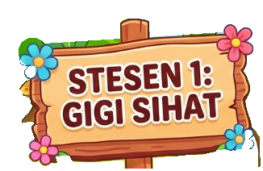
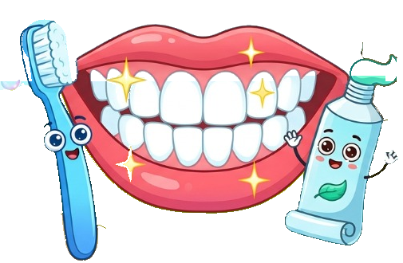
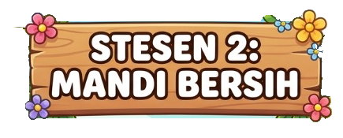
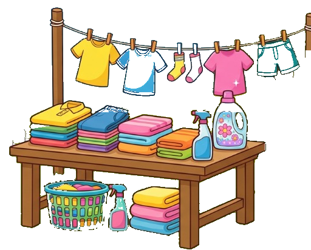

Kata adjektif pancaindera menerangkan sifat yang dapat dikesan melalui 5 deria manusia. Klik perkataan untuk mendengar sebutannya:
🔊 Bersih 🔊 Berkilat 🔊 Kemas 🔊 Kotor
Contoh: Gigi adik kelihatan bersih dan berkilat.
🔊 Wangi 🔊 Harum 🔊 Busuk 🔊 Hapak
Contoh: Sabun di dalam tab mandi itu berbau wangi.
🔊 Lembut 🔊 Licin 🔊 Kasar 🔊 Kering
Contoh: Baju yang telah dicuci itu berasa sangat lembut.
🔊 Segar 🔊 Manis 🔊 Senyap 🔊 Bising
Contoh: Ubat gigi pudina itu memberikan rasa segar.
Seret (atau klik) buih kata adjektif di bawah ke dalam kotak deria pancaindera yang betul:
1. Selepas mandi dengan sabun bunga, badan adik berasa ______ dan berbau ______.
2. Ibu menasihati adik supaya berhati-hati kerana lantai bilik air yang bersabun itu ______. (Deria Sentuhan)
3. Alia menutup hidungnya apabila lalu di tepi tong sampah itu kerana berbau ______. (Deria Bau)
Baju hijau dan stoking yang dijemur itu kelihatan sangat ______ tanpa kotoran.
Pakaian yang dicuci dengan pelembut kain berasa sangat ______ apabila disentuh.
Baju sekolah Amir berbau ______ seperti bunga selepas dibasuh oleh ibu.
Soalan Bonus (+20 Skor): Antara berikut, manakah pasangan Kata Adjektif Pancaindera dan Deria yang BETUL?
Bina tiga ayat lengkap berdasarkan kata adjektif pancaindera di bawah:
Pilih destinasi untuk Doktor Cilik berjalan: